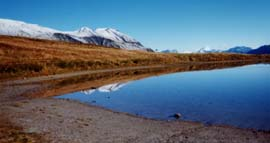

aiguille Croche (2487 m)

Départ : le Signal (télécabine - 1850 m)
Aller : xx km, +637 m, xx min
Retour : xx km, + 200 et - 1207 m, xx min
Difficulté : EE
Période : juillet - mi septembre
Remarque : -
Bibliographie : 30 balades autour de St Gervais (balade 29).
De la gare supérieure du télécabine, suivre la route pastorale montant au col du Joly. Atteindre le sommet par le sentier sur l’arête.
Retour en suivant la crête NE un peu aérienne par endroits : tête du Véleray (téléski) puis tête de la Combaz. Descendre par le sentier balisé jusqu’à Colombaz (1510 m). Remonter sur 400 mètres la piste pour prendre le sentier qui descend à la gorge et remonte aux Tappes (= l’Etape, gare intermédiaire du télécabine - 1480 m).
photo : la crête vers le mont Joly, depuis le lac de Roselette